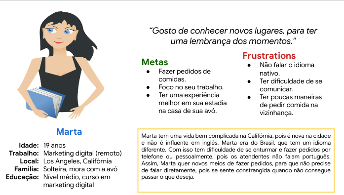
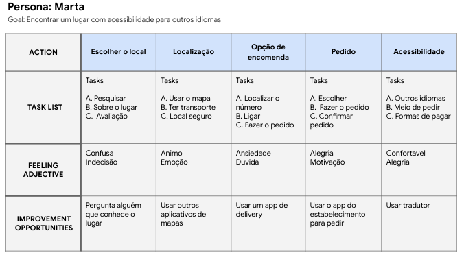
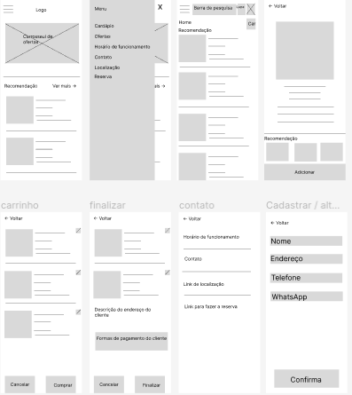
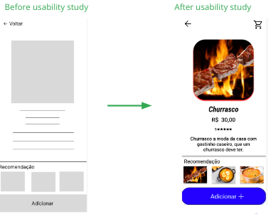
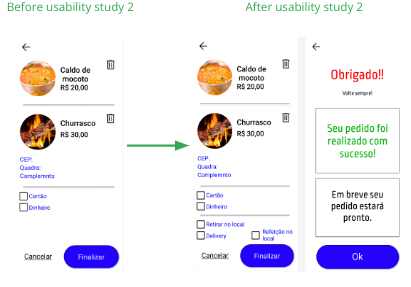

Visão Geral do Projeto
O produto:
Projete um aplicativo de vendas móvel para um restaurante familiar
Duração do projeto:
3 meses
O problema:
A indecisão e a escolha de um lugar adequado.
O objetivo:
Ajudar o cliente ter uma experiência melhor no estabelecimento.
Minha função:
Gerenciar o projeto, sendo que estarei em todas as funções.
Responsabilidades:
Construir Wireframing, realizar a pesquisa com o usuário, construir o protótipo e tentar
satisfazer o desejo do usuário.
Compreensão o usuário
Pesquisa do usuário:
O restaurante tem três opções de como que vai querer comer, como retirar no local, fazer a
refeição no local e a entrega. Com isso, aumentando o poder de escolha do cliente, que dá total
autonomia de fazer a sua refeição.
Pontos de dor:
1 - Demora pela entrega
2 - Demora pela atualização do cadastro de reserva.
3 - Ocupação do local

Personagem: Ana
Ana é médica, que precisa de lugares com atendimentos rápidos, porque não
tem tempo de fazer as refeições;

Mapa da jornada: Ana
As ações do restaurante podem afetar diretamente as ações de Ana, pois ela precisa de algo
rápido.
Iniciando o design

Wireframes digital:
A lo-fi, tinha a ideia de mostrar onde ficariam os elementos, então apenas para identificar o
que seria em cada espaço.
Protótipo de baixa fidelidade:
O lo-fi, serve para ter uma ideia das posições e de como irá ficar o App.
Estudo de usabilidade:
Descobertas da 1ª Rodada
1 - Usuário quer maneira mais fácil
2 - Quer tutorial a qualquer momento
3 - Cupom para dar desconto
Descobertas da 2ª Rodada
1 - Simplicidade em realizar pedido
2 - Usuário quer opções de entregas
3 - Usuários querem uma customização do pedido
Refino o design

Mockups:
A parte onde mostra o item, ela se tornou algo simples para que o usuário entenda como que foi
feita a melhorá.

Mockups:
Ao fazer o segundo estudo de usabilidade, percebemos que não tinha opção de onde seria feita a
refeição, e a mensagem de finalizar, então incluímos em nosso hi-fi essas etapas.
Alta fidelidade protótipo:
O hi-fi, apresenta uma estrutura simples onde o usuário usa de forma simples e rápida, sem que
tenha o problema de falta de função.
Considerações de acessibilidade:
1 - Com a estruturação adequada do App, o leitor pode ler sem muitos problemas, pois terá um
sequência seguindo a WCAG 3.
2 - Ao utilizar cores neutras, para facilitar pessoas com problemas de vista, em relação a
claridade. Adicionaremos uma função de contraste de cores no App.
3 - Ao usar poucas animações, ajudamos pessoas que têm problemas com a tremedeira em suas
mãos, para evitar toques acidentais e ativar função sem querer.
Daqui para frente
Impacto:
Como o mercado de restaurantes estão indo devagar na inovação, inovar em um restaurante é algo
ideal para os dias atuais, pois diminuirá o tempo gasto pelo cliente.
Aprendizado:
Ao criar um protótipo, se aprende desde o começo até o fim, como fazer as pesquisas e trabalhar
com wireframes.
Próximos passos:
1 - Começaria a desenvolver em uma linguagem que o computador entenda, para o cliente ter acesso
real.
2 - Implantaria em algum restaurante, para que possa melhorar o seu atendimento, aumentando
a rotatividade.
3 - Compartilharia a ideia com os colegas de sala, para poder dar uma melhor performance no
App.
Apresentação, slides
Aprensetação do estudo de caso